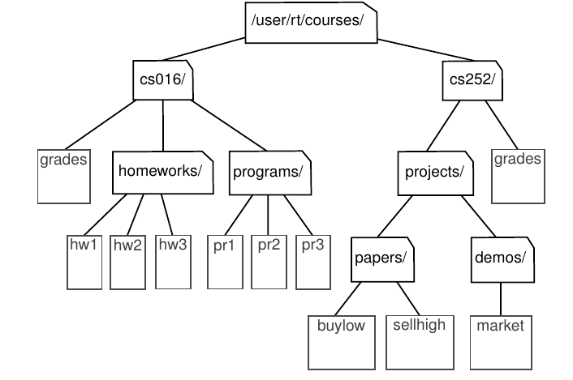
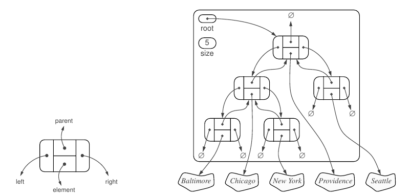
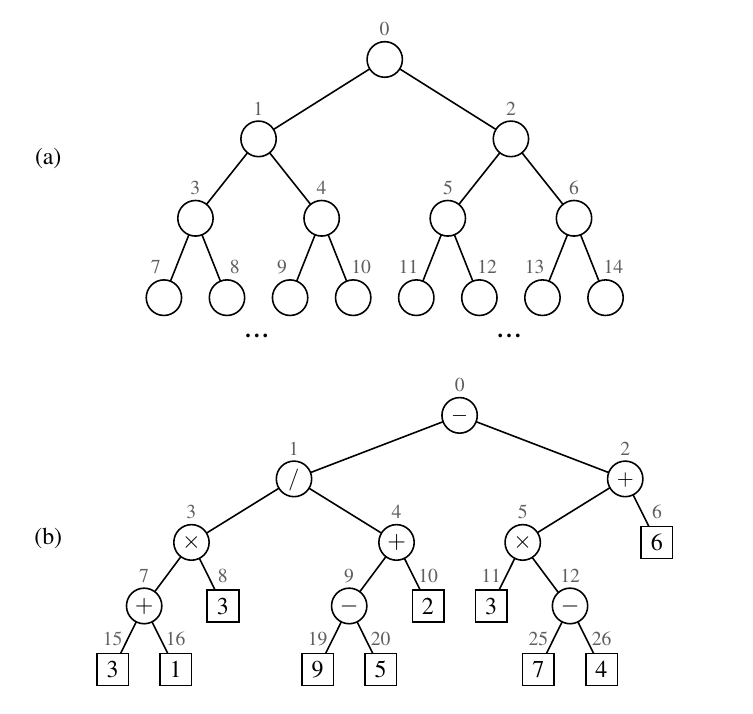

Contents
<ol>
<li><a class="" href="#Tree">Tree</a></li>
- Other Node Relationships
- Edges and Paths in Trees
- Ordered Trees
- Some More Properties
- Depth of a Node
- Height of a Node
- Types of Tree data structures
- Represenation
- A Recursive Binary Tree Definition
- Linked Structure for Binary Trees
- Array-Based Representation of a Binary Tree
- Types of Binary Tree
Tree
A tree is an abstract data type that stores elements hierarchically. With the exception of the top element, each element in a tree has a parent element and zero or more children elements.
Formally, we define a tree T as a set of nodes storing elements such that the nodes have a parent-child relationship that satisfies the following properties: * If T is nonempty, it has a special node, called the root of T , that has no parent. * Each node v of T different from the root has a unique parent node w; every node with parent w is a child of w.
Other Node Relationships

Two nodes that are children of the same parent are siblings. A node v is external if v has no children. A node v is internal if it has one or more children. External nodes are also known as leaves.
A node u is an ancestor of a node v if u = v or u is an ancestor of the parent
of v. Conversely, we say that a node v is a descendant of a node u if u is an ancestor
of v. In the figure, cs252/ is an ancestor of papers/, and pr3 is a
descendant of cs016/.
The subtree of T rooted at a node v is the tree consisting of
all the descendants of v in T (including v itself).
In the fugure, the subtree rooted at
cs016/ consists of the nodes cs016/, grades, homeworks/, programs/, hw1, hw2,
hw3, pr1, pr2, and pr3.
Edges and Paths in Trees
An edge of tree T is a pair of nodes (u, v) such that u is the parent of v, or vice
versa. A path of T is a sequence of nodes such that any two consecutive nodes in
the sequence form an edge. For example, the tree in the figure contains the path
(cs252/, projects/, demos/, market).
Ordered Trees
A tree is ordered if there is a meaningful linear order among the children of each node; that is, we purposefully identify the children of a node as being the first, second, third, and so on. Such an order is usually visualized by arranging siblings left to right, according to their order.
Some More Properties
- Number of edges: An edge can be defined as the connection between two nodes. If a tree has N nodes then it will have (N-1) edges. There is only one path from each node to any other node of the tree.
- Depth of a node: The depth of a node is defined as the length of the path from the root to that node. Each edge adds 1 unit of length to the path. So, it can also be defined as the number of edges in the path from the root of the tree to the node.
- Height of a node: The height of a node can be defined as the length of the longest path from the node to a leaf node of the tree.
- Height of the Tree: The height of a tree is the length of the longest path from the root of the tree to a leaf node of the tree.
- Degree of a Node: The total count of subtrees attached to that node is called the degree of the node. The degree of a leaf node must be 0. The degree of a tree is the maximum degree of a node among all the nodes in the tree.
Depth of a Node
Let p be the position of a node of a tree T . The depth of p is the number of ancestors of p, excluding p itself. The depth of p can also be recursively defined as follows: - If p is the root, then the depth of p is 0. - Otherwise, the depth of p is one plus the depth of the parent of p.
Height of a Node
The height of a position p in a tree T is also defined recursively: - If p is a leaf, then the height of p is 0. - Otherwise, the height of p is one more than the maximum of the heights of p’s children.
The height of a nonempty tree T is the height of the root of T .
Types of Tree data structures
The different types of tree data structures are as follows:
1. General tree
A general tree data structure has no restriction on the number of nodes. It means that a parent node can have any number of child nodes.
2. Binary tree
A node of a binary tree can have a maximum of two child nodes.
3. Balanced tree
If the height of the left sub-tree and the right sub-tree is equal or differs at most by 1, the tree is known as a balanced tree.
Binary Tree
A tree whose elements have at most 2 children is called a binary tree.
Represenation
A tree is represented by a pointer to the topmost node of the tree. If the tree is empty, then the value of the root is NULL.
A Tree node contains the following parts. 1. Every node has at most two children. 2. Each child node is labeled as being either a left child or a right child. 3. A left child precedes a right child in the order of children of a node.
The subtree rooted at a left or right child of an internal node v is called a left subtree or right subtree, respectively, of v. A binary tree is proper if each node has either zero or two children. Some people also refer to such trees as being full binary trees. Thus, in a proper binary tree, every internal node has exactly two children. A binary tree that is not proper is improper.
A Recursive Binary Tree Definition
We can also define a binary tree in a recursive way such that a binary tree is either empty or consists of: - A node r, called the root of T , that stores an element - A binary tree (possibly empty), called the left subtree of T - A binary tree (possibly empty), called the right subtree of T
Linked Structure for Binary Trees
A natural way to realize a binary tree T is to use a linked structure, with a node that maintains references to the element stored at a position p and to the nodes associated with the children and parent of p. If p is the root of T , then the parent field of p is None. Likewise, if p does not have a left child (respectively, right child), the associated field is None. The tree itself maintains an instance variable storing a reference to the root node (if any), and a variable, called size, that represents the overall number of nodes of T .

Array-Based Representation of a Binary Tree
An alternative representation of a binary tree T is based on a way of numbering the positions of T . For every position p of T , let \(f (p)\) be the integer defined as follows. - If p is the root of T , then \(f (p) = 0\). - If p is the left child of position q, then \(f (p) = 2 f (q) + 1\). - If p is the right child of position q, then \(f (p) = 2 f (q) + 2\).
The numbering function f is known as a level numbering of the positions in a binary tree T , for it numbers the positions on each level of T in increasing order from left to right. Note well that the level numbering is based on potential positions within the tree, not actual positions of a given tree, so they are not necessarily consecutive. For example, in the figure, there are no nodes with level numbering 13 or 14, because the node with level numbering 6 has no children.

One advantage of an array-based representation of a binary tree is that a position p can be represented by the single integer \(f (p)\), and that position-based methods such as root, parent, left, and right can be implemented using simple arithmetic operations on the number \(f (p)\). Based on our formula for the level numbering, the left child of p has index \(2 f (p) + 1\), the right child of p has index 2 \(f (p) + 2\), and the parent of p has index \(\lfloor( f (p) − 1)/2\rfloor\).
Types of Binary Tree
Full Binary Tree
A Binary Tree is a full binary tree if every node has 0 or 2 children. The following are the examples of a full binary tree. We can also say a full binary tree is a binary tree in which all nodes except leaf nodes have two children. It is also known as a proper binary tree.
18
/ \
15 30
/ \ / \
40 50 100 40
18
/ \
15 20
/ \
40 50
/ \
30 50
18
/ \
40 30
/ \
100 40
Complete Binary Tree
A Binary Tree is a Complete Binary Tree if all the levels are completely filled except possibly the last level and the last level has all keys as left as possible.
A complete binary tree is just like a full binary tree, but with three major differences:
- Every level must be completely filled
- All the leaf elements must lean towards the left.
- The last leaf element might not have a right sibling i.e. a complete binary tree doesn’t have to be a full binary tree.
18
/ \
15 30
/ \ / \
40 50 100 40
18
/ \
15 30
/ \ / \
40 50 100 40
/ \ /
8 7 9
Perfect Binary Tree
A Binary tree is a Perfect Binary Tree in which all the internal nodes have two children and all leaf nodes are at the same level.
18
/ \
15 30
/ \ / \
40 50 100 40
18
/ \
15 30
Balanced Binary Tree
A balanced binary tree, also referred to as a height-balanced binary tree, is defined as a binary tree in which the height of the left and right subtree of any node differ by not more than 1. Furthermore, the height of the tree is O(Log n) where n is the number of nodes.


Degenerate Binary Tree
A Tree where every internal node has one child. Such trees are performance-wise same as linked list.
A degenerate or pathological tree is the tree having a single child either left or right.
10
/
20
\
30
\
40
Binary Search Tree
A binary tree is binary search tree if it satisfies the following property: 1. All nodes of left subtree are less than the root node 2. All nodes of right subtree are more than the root node 3. Both subtrees of each node are also BSTs i.e. they have the above two properties

Heap
A Heap is a special Tree-based data structure in which the tree is a complete binary tree. It has the following properties:
- It’s a complete tree (All levels are completely filled except possibly the last level and the last level has all keys as left as possible). This property of Binary Heap makes them suitable to be stored in an array.
- A Binary Heap is either Min Heap or Max Heap. In a Min Binary Heap, the key at root must be minimum among all keys present in Binary Heap. The same property must be recursively true for all nodes in Binary Tree. Max Binary Heap is similar to MinHeap.
10 10
/ \ / \
20 100 15 30
/ / \ / \
30 40 50 100 40
Operations of Heap
- Heapify: a process of creating a heap from an array.
- Insertion: process to insert an element in existing heap time complexity O(log N).
- Deletion: deleting the top element of the heap or the highest priority element, and then organizing the heap and returning the element with time complexity O(log N).
- Peek: to check or find the most prior element in the heap, (max or min element for max and min heap).
Applications of Heaps
- Heap Sort uses Binary Heap to sort an array in O(nLogn) time.
- Priority queues can be efficiently implemented using Binary Heap because it supports insert(), delete() and extractmax(), decreaseKey() operations in O(logn) time.
- The priority queues are especially used in Graph Algorithms like Dijkstra’s Shortest Path and Prim’s Minimum Spanning Tree.
- Many problems can be efficiently solved using Heaps. For example
- K’th Largest Element in an array.
- Sort an almost sorted array
- Merge K Sorted Arrays.
# A Python program to demonstrate common binary heap operations
# Import the heap functions from python library
from heapq import heappush, heappop, heapify
# heappop - pop and return the smallest element from heap
# heappush - push the value item onto the heap, maintaining
# heap invarient
# heapify - transform list into heap, in place, in linear time
# A class for Min Heap
class MinHeap:
# Constructor to initialize a heap
def __init__(self):
self.heap = []
def parent(self, i):
return (i-1)//2
# Inserts a new key 'k'
def insertKey(self, k):
heappush(self.heap, k)
# Decrease value of key at index 'i' to new_val
# It is assumed that new_val is smaller than heap[i]
def decreaseKey(self, i, new_val):
self.heap[i] = new_val
while(i != 0 and self.heap[self.parent(i)] > self.heap[i]):
# Swap heap[i] with heap[parent(i)]
self.heap[i] , self.heap[self.parent(i)] = (
self.heap[self.parent(i)], self.heap[i])
# Method to remove minium element from min heap
def extractMin(self):
return heappop(self.heap)
# This functon deletes key at index i. It first reduces
# value to minus infinite and then calls extractMin()
def deleteKey(self, i):
self.decreaseKey(i, float("-inf"))
self.extractMin()
# Get the minimum element from the heap
def getMin(self):
return self.heap[0]
# Driver pgoratm to test above function
heapObj = MinHeap()
heapObj.insertKey(3)
heapObj.insertKey(2)
heapObj.deleteKey(1)
heapObj.insertKey(15)
heapObj.insertKey(5)
heapObj.insertKey(4)
heapObj.insertKey(45)
print(heapObj.extractMin())
print(heapObj.getMin())
heapObj.decreaseKey(2, 1)
print(heapObj.getMin())